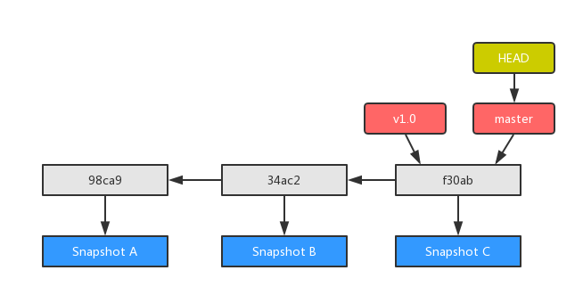
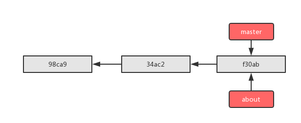
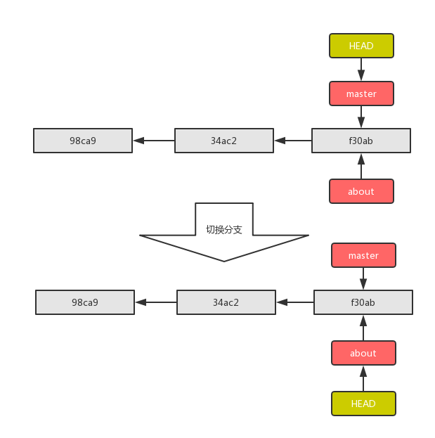
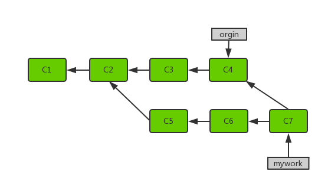

分支管理¶
当我们提交了多次，通过 git status 查看，提示我们工作在 master 分支上，为什么每次提交都会提交到 master 分支上？因为 HEAD 指针指向的是 master 分支。
创建分支¶
当开发者添加新的功能，这可能需要修改以前的代码，如果继续在 master 分支上开发的话，首选会导致 master 分支上提交特别多，其次多人协同开发，大家都在 master 分支上进行开发，功能会比较混乱。所以切记当你要开发一个新的功能的时候，不要在 master 主分支上进行开发，一定要创建一个新的分支。
git branch <branch_name>
切换分支¶
切换分支就是将 HEAD 指针从原来指向 master 切换为指向 about。
切换分支时，一定要注意你工作目录里的文件会被改变。如果是切换到一个较旧的分支，你的工作目录会恢复到该分支最后一次提交时的状态。如果 Git 不能干净利落地完成这个任务，它将禁止切换分支。
git checkout <branch_name>
合并分支¶
在提交 C1、C2 两次之后，创建了一个分支，C3、C4 与 C5、C6 是平行的，当使用 git merge 提交的时候，C7 两个分支进行了合并提交。
git merge <branch_name>
分支命令¶
| 命令 | 内容 |
|---|---|
git branch |
查看所有分支 |
git branch -v |
查看所有分支详细内容 |
git branch --merged |
查看已被合并的分支 |
git branch --no-merged |
查看未被合并的分支 |
git branch -d about |
删除指定分支 |
git checkout |
切换分支 |
git merge |
分支合并 |
git log |
查看分支日志 |
git stash |
制作暂存区域 |
git tag |
打标签 |